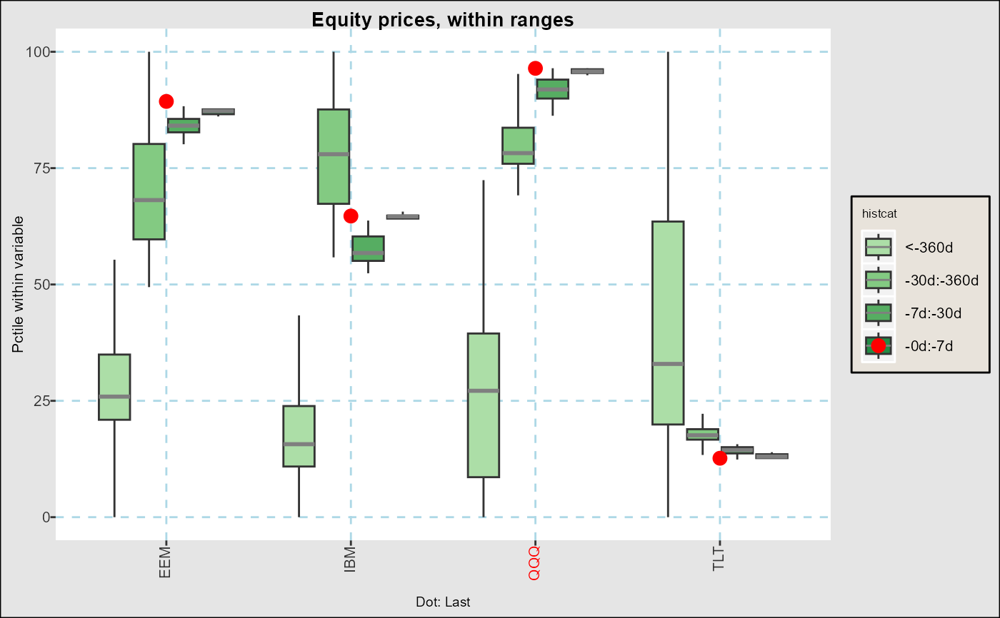
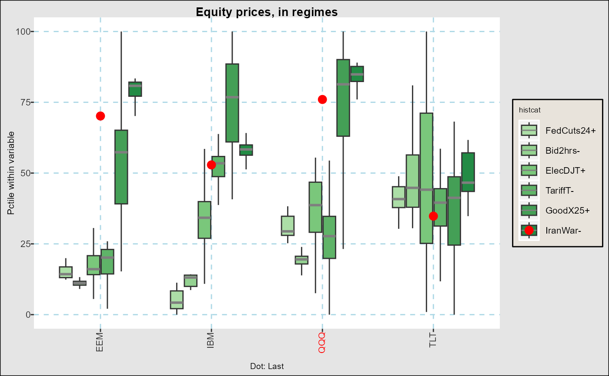
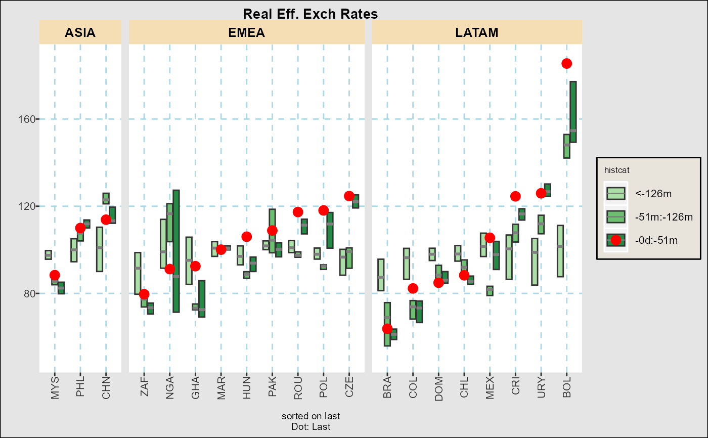
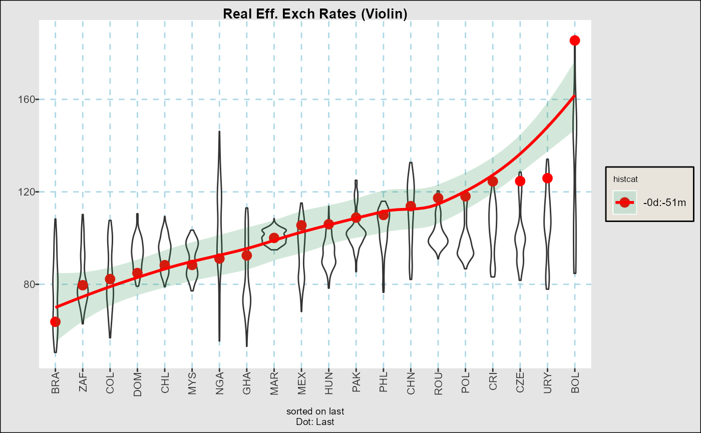

Plots static summaries of time series in boxplot form.
Usage
fg_tsboxplot(indt,title="",xlab="",ylab="",
breaks=c(7,30,90,360), doi="last", normalize="", orderby="",
boxtype= "",
dropset="",hilightcats="",
addline="", #last/mean
facetform="",
ycoord=NULL,trimpctile=0,
legend="insidetop",meltvar="variable",flip=FALSE,ptsize=3)Arguments
- indt
Input data.frame with at least one date variable and one or more vategorical variables, if melted.
- title, xlab, ylab
TItles and Labels
- breaks
A list or text as follows
<doiset>: A dates of interest category, seefg_get_dates_of_interest()list of integers: A list of days for which to go back in time, e.g.
c(7,30,360)creates intervals for the last week, 1 week to 1 month, etc.list of reals in
[0,1]fractions of the dates in each category, e.gc(0.2,1)creates intevals with the last 20pct of dates, and any older.
- doi
Points or segments to overlay with latest observations, or changes since a particular date.
"last"(Default) Last date as a dot"last,<d1>"Segment from dated1to last date in input data."last,n"Segment fromnth date from the end to the end."date,<d1>"Levels as of dated1"none"No points or segments.
- normalize
Normalize data in some way prior to plotting. Choices are
"byhistcat"Transform data into percentiles within each variable and historical category"byvar","zbyvar"Transform data into percentiles (or z-scores) within each variable and historical category
- orderby
(Default
"") Underlying categories are by default ordered as inindt, unless"value","-value": Order by last value in series for each category or descending if"-value""date,<d1>","-date,<d1>": Order by value (or decreasing value) at date<d1>"alpha","-alpha"Order alphabetically in ascending or descnding orer.
- boxtype
Formatting of boxplots. If in
"violin,"viobycat"make a violin plot, otherwise show a full boxplot (with outliers turned off by default), with any aspects inc("nostaple","nomedian","nobox")taken out.- dropset
String or list with underlying categories to drop from graph
- hilightcats
String or list of underlying categories to highlight with differnt color in label.
- addline
in
c("mean","last")Add a horizontal line across the mean of all observations or a smooth like across last observations- facetform
(Default: "") Any faceting formula which includes text or factor columns in
indt. See examples and note that facets can also be added usingggplot2::facet_grid()to the output graph.- ycoord
(Default NULL) a two element list with limits on y corrdinates
- trimpctile
(Default 0) trims data before any plotting to fall within
c(trimpctile,1-trimpctile)percentiles within each variable.- legend
(Default
"insidetop") Where to put the legend- meltvar
(Default:
"variable"Name of variable with unit category.- flip
(Default
FALSE) IfTRUEthen categories are arranged vertically- ptsize
(Default: 3) Size of points for
doiparmeter
Value
A ggplot2::ggplot() object
Examples
fg_tsboxplot(eqtypx,breaks=c(7,30,360),normalize="byvar",hilightcats="QQQ",
title="Equity prices, within ranges")

fg_tsboxplot(narrowbydtstr(eqtypx,"-2y::"),breaks="regm",normalize="byvar",
hilightcats="QQQ",title="Equity prices, in regimes")

fg_tsboxplot(reerdta,breaks=c(0,0.2,0.5,1),doi="last",orderby="value",
boxtype="nowhisker",facetform=". ~ REGION",title="Real Eff. Exch Rates")

fg_tsboxplot(reerdta,breaks=c(0,0.2,0.5,1),doi="last",orderby="value",
addline="last",boxtype="violin",title="Real Eff. Exch Rates (Violin)")
#> `geom_smooth()` using method = 'loess' and formula = 'y ~ x'
